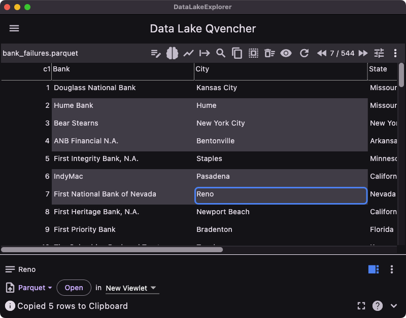
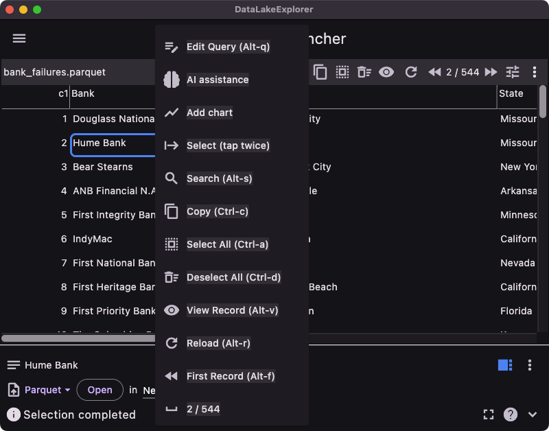

Selection of records can be done either using mouse, keyboard or touch screen. Multiple ranges can be selected for copying records.
The following example shows selection of two records ranges and selection of records by tapping:


Following are keyboard and mouse shortcuts to select records:
| Shortcut | Function |
| Shift + click or arrow keys | Add records to selection |
| Alt + click or arrow keys | Remove records from selection |
| Cmd + click | Toggle selection |
| Ctrl/Cmd + A | Select All |
| Ctrl/Cmd + D | Deselect All |
| Ctrl/Cmd + C | Copy selected records |
| Double tap on a cell | Start selection |
| Tap on end cell | End selection |